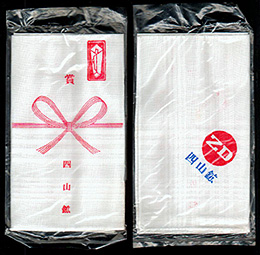

<!DOCTYPE HTML PUBLIC "-//W3C//DTD HTML 4.01 Transitional//EN">
<HTML>
<HEAD>
<META http-equiv="Content-Type" content="text/html>
<META http-equiv="Content-Style-Type" content="text/css" media="all">
<TITLE>みいけ展示室</TITLE>
</HEAD>
<BODY>
<BLOCKQUOTE>
<TABLE>
  <TBODY>
    <TR>
      <TD width="516">
      <P class="MsoNormal" style="text-indent:71.65pt;mso-char-indent-count:4.92"><B style="mso-bidi-font-weight:normal"><FONT color="red" size="+1">展示品</FONT><SPAN lang="EN-US" style="font-size:16.0pt;
mso-font-width:90%"></SPAN></B><BR>
      </P>
      <TABLE>
        <TBODY>
          <TR>
            <TD width="91"></TD>
            <TD width="404">　<B>四山鉱 ＺＤ運動ハンカチ</B><P>
            　　　　（提供　積氏）
            </TD>
          </TR>
        </TBODY>
      </TABLE>
      <p class=MsoNormal style='text-indent:11.0pt;mso-char-indent-count:1.0;
line-height:17.0pt;mso-line-height-rule:exactly'><FONT face="MS UI Gothic">従業員一人ひとりの注意と工夫によって
ミスや事故などを無くし効果的に仕事を進めようという小集団による全員参加型自主管理活動として、三井三池四山鉱で取り入れられ、
三池新労は会社側のこの提案を受け入れ取り組んだが、三池労組は参加しなかったという。ＺＤ運動とは、早い話が「生産性向上運動」
の一つ。安全を最優先とした三池労組が参加しなかった理由はそこにあったらしい。<BR>
　「1976年（昭和51）に入社した頃にはＺＤ運動は始まっていたような気がします」（積さん）
<P><spanlang=EN-US style='font-size:11.0pt'></span><P>
　なお、ＺＤ運動のＺＤとは、Zero Defects（無欠点）の略。法政大学大原社会問題研究所の解説によると「アメリカのマーチン社が
1962年、ミサイルの品質向上とコストダウンを目的として開発した管理手法」で、「日本では日本電気が1965年5月10日に導入実施し
たのが最初」と言われている。
</FONT></p>
      </TD>
    </TR>
  </TBODY>
</TABLE>
</BLOCKQUOTE>

</BODY>
</HTML>
